|
| Sweep (Элемент протягивания) |
|
Команда amsweep (Part > Sketched Features > Sweep) создаёт твердотельный элемент, определенный планарным поперечным сечением, протягиваемым вдоль
двухмерной или трёхмерной траектории. Плоскость эскиза профиля зависит от плоскости эскиза траектории. Этот процесс требует создания траектории
протягивания и поперечного сечения. И то, и другое может быть образмеренным. Поля OPERATION, TERMINATION и SIZE аналогичны соответствующим полям
операции Extrusion. Поле BODY TYPE определяет выполнение операции протягивания:
- Normal – протягивание перпендикулярно траектории;
- Parallel – протягивание параллельно траектории.

Браузер |
Нажатием правой клавиши мыши на иконке Профиль (Profile) окна браузера вызовите контекстное меню , где выберите пункт Sweep. |

Кнопка инструментов
(Sweep) |
 |
Меню |
Part -> Sketched Features -> Sweep |
Команда |
AMSWEEP |
|
| Диалоговое окно Sweep Feature |
|

OPERATION
Определяет тип выполняемой Булевой операции.
Base. Создает базовый элемент.
Cut. Вырезает элемент протягивания из базовых элементов.
Join. Соединяет элемент протягивания с базовым элементом.
Intersect. Создает новый элемент, определенный пересечением между
элементом протягивания и базовым элементом.
Split. Использует элемент протягивания для рассечения базового
элемента.
TERMINATION
Определяет тип завершения элемента протягивания.
Path Only. Протягивает профиль вдоль траектории.
To Face. Протягивает профиль до выбранной грани.
From To. Протягивает профиль от одной грани до другой.
SIZE
Определяет уклон, накладываемый на элементы протягивания.
Draft Angle.Использует значение для наложения уклона к элементам
протягивания.
BODY TYPE
Определяет выполнение операции протягивания.
Normal.Выполняет протягивание элементов перпендикулярно траектории.
Parallel.Выполняет протягивание элементов параллельно траектории.
|
| Пример создания объёмного тела методом протягивания |
|
Шаг 1 |
При помощи команды pline создаётся линия (в отличие от профиля линия может быть незамкнутой).
Чтобы уточнить форму линии изгиба, добавляется, если необходимо
стандартные скругления.
Для получения изометрической проекции вводится 8 |
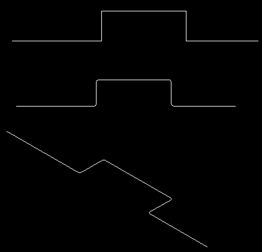
Шаг 2
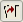 |
Для идентификации линии изгиба вводится AM2DPATH
Щелкаем мышью в любом месте линии изгиба |
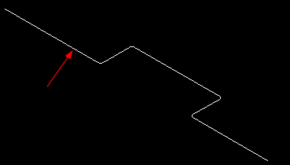
| |
Select start point of path: Выбираем тот конец линии, на котором помещен профиль |
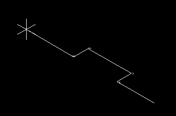
Шаг 3
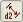 |
Проставляем размеры линии изгиба: AМРARDIM
(Участок линии, на котором ставится размер, выбирается щелчком мыши)
|
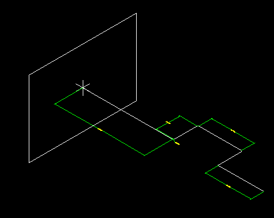
| Create a profile plane perpendicularto the path? (Нажимаем клавишу,
соглашаясь с ответом Yes (Да) на предложение создать плоскость профиля,
перпендикулярную линии изгиба
Select edge to align X axis: Нажимаем
клавишу <Enter>, соглашаясь с расположением оси X по умолчанию).
Заметьте, что на конце линии изгиба создается эскизная плоскость,
так что появляется возможность создания профиля.
|
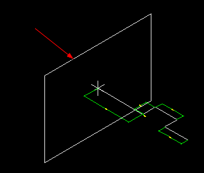
Шаг 4
| Нарисуем эскиз профиля на конце линии изгиба.
|
Подсказка: для проверки правильности расположения профиля на линии изгиба
воспользуемся осями привязки объекта.
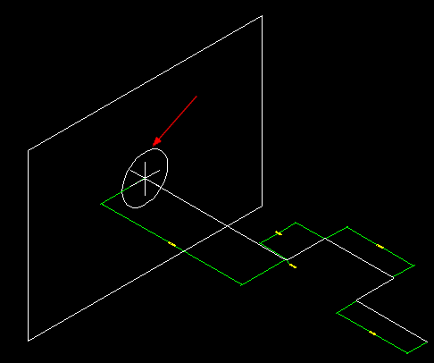
Шаг 5
|
Идентифицируем профиль, введя с клавиатуры AMPROFILE |
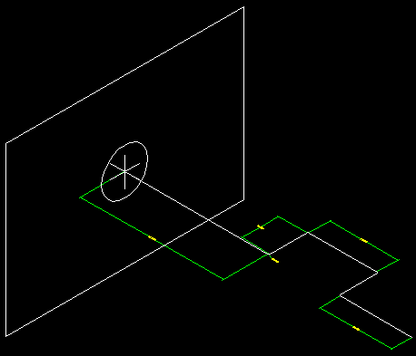
Шаг 6
|
Проставим размеры на профиле: AHPARDIM |
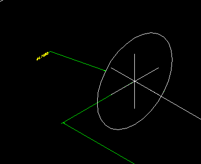
Шаг 7
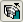 |
Теперь все готово для выполнения операции изгиба!
Вводим с клавиатуры AMSWEEP. Соглашаемся с установками по умолчанию.
Генерация изгиба займет несколько секунд |
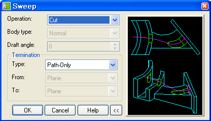
Внимание! Некоторые из опций команды изгиба позволяют создавать
тела уникальной формы. Попытайтесь, например, установить в окне опции Draft Angle (Угол обжатия) значения, отличные
от нуля, и посмотрите на полученный результат.
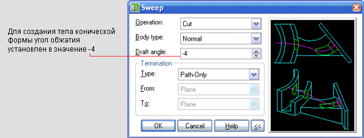
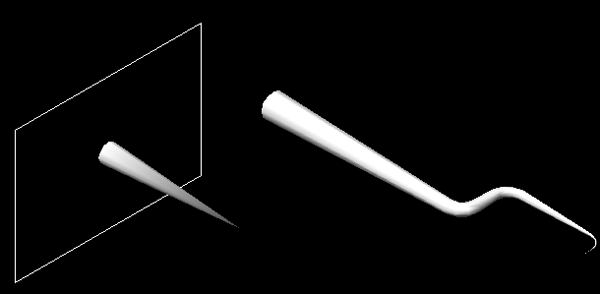
Для получения тел с уникальной формой угол обжатия устанавливается
в значение -4 (слева) и -2 (справа)
Другие опции включают в себя способы задания пространственных пределов
изгиба.
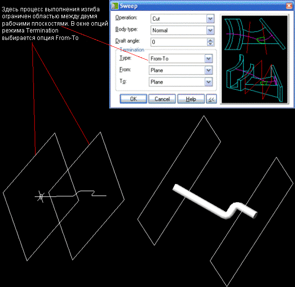
Результат изгиба в режиме плоскость-плоскость
|
| Пример построения протянутой 3D спирали |
|
|